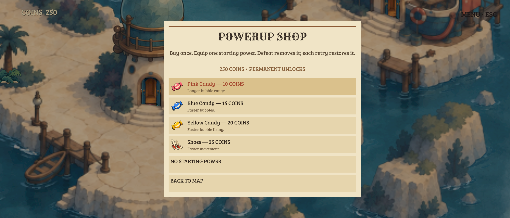
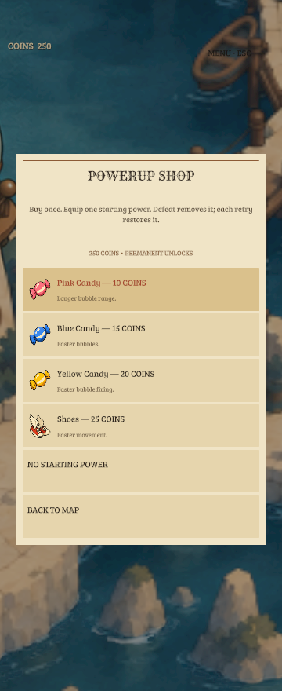

The existing maps, brought to life
Game Engine captures of the integrated five-map rollout. The original paintings, geography, destination positions and camera settings are preserved. New sprites add registered water drawings, lantern poses, doorway states and three non-dragon residents.
The earlier harbor concept review remains historical. These images show production content; the before/after names below are animation times, not a replacement-map comparison.
Powerup shop
One existing stall on every explorable district. SHOP lettering and visible stock identify the counter. Four permanent upgrades cost 10, 15, 20 and 25 coins; one can be equipped at a time. Purchases equip immediately and apply at the start of an encounter or retry.


Implementation and verification details. Static engine captures cannot demonstrate handset frame pacing or thermal performance.